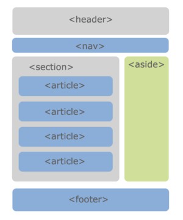
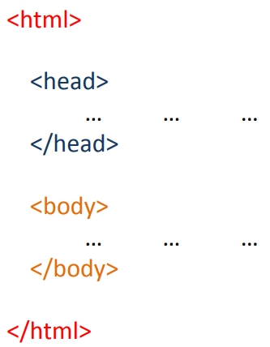
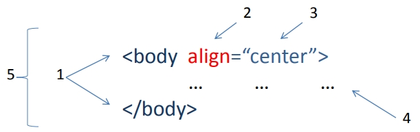
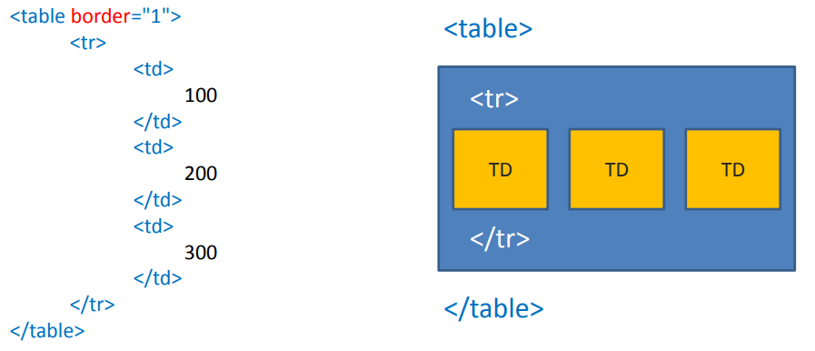
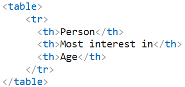
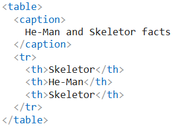
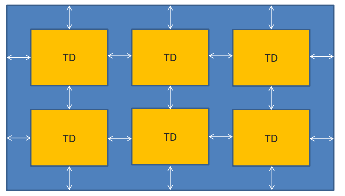
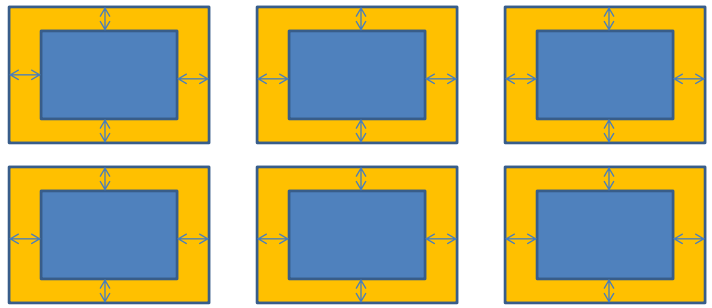
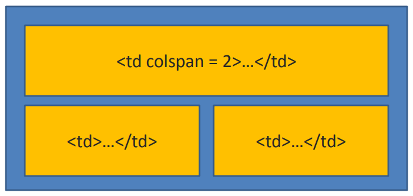
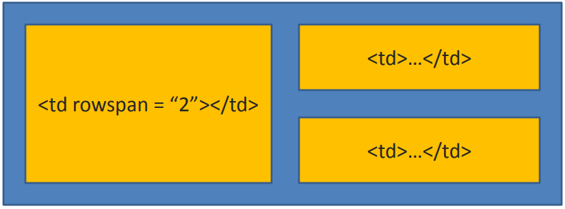

HTML - HyperText Markup Language
Мова для створення розмітки документів, з яких складаються вебсторінки в браузері з метою забезпечення їх простоти. Всі вебсторінки складаються з html елементів, які формують їх.
HTML файл може бути створений та відредагований у будь-якому текстовому редакторі або IDE.
HTML5 — наступна версія мови HTML.
Що включає HTML5:
Елементами header є заголовки розділів. Вони можуть складатися з декількох частин — наприклад, було б виправдано розділяти блок заголовка на підзаголовки, історію версій або вказання авторства. Елемент footer визначає нижню частину розділу, до якого він відноситься. Зазвичай він містить інформацію про розділ — наприклад, ім'я автора, посилання на схожі документи, копірайт і тому подібне. Блок nav містить список посилань для навігації. Підходить, наприклад, для навігації по сайту, або для змісту. Елемент aside підходить для розміщення вмісту яким-небудь чином спорідненого основному контенту. У звичайному випадку буде корисний для розмітки бічної колонки. Тег section представляє загальний розділ документа або додатку, наприклад, такий як розділ. Тег article відзначає незалежний розділ документа, сторінки або сайту. Застосуємо для такого вмісту як новини, запису блога, повідомлення у форумі або коментарі користувачів.


<html> є контейнером, який містить у собі
весь вміст веб-сторінки, включаючи теги <head> та <body>.
Відкриває та закриває теги <html> у документі
необов'язкові, але гарний стиль диктує неодмінне їх
використання.
<head> містить інформацію про сторінку. У ньому
розташовуються метатеги, посилання на модулі, що підключаються.
<body> є контейнером для всього вмісту,
яке буде відображено користувачеві.
Самостійна робота:
Навіщо потрібен DOCTYPE?
Блочні елементи займають всю доступну їм ширину і висота елемента визначається його вмістом (текст або інший вкладений елемент). Такі елементи розміщуються на окремому рядку.
Рядкові елементи - це теги, які поводяться подібно до звичайного тексту і цілком можуть бути розміщені всередині блокового елемента. В основному призначені для того, щоб змінити зовнішній вигляд тексту

Навіщо потрібна семантична розмітка
<header>, <div
class="header">)
Структурні розділи сторінки
<header> - шапка сторінки або секції (логотип, заголовок, часто навігація)<nav> - блок навігаційних посилань<main> - основний унікальний контент сторінки (лише один на документ)<article> - самодостатній, незалежний блок контенту (стаття, пост, коментар)<section> - тематично згрупована частина контенту з власним заголовком<aside> - побічний контент (сайдбар, врізка, реклама)<footer> - підвал сторінки або секції (контакти, копірайт)Семантика текстового контенту
<h1 - h6> - заголовки з ієрархією важливості<p> - абзац тексту<blockquote / q> - блокова та рядкова цитата<strong / em> - семантичне (а не лише візуальне) виділення важливості/наголосу<mark> - виділення релевантного фрагмента (наприклад, результат пошуку)<time datetime="..."> - машинозчитувана дата/часСемантика списків
<ul> - неупорядкований список (>li>)<ol> -упорядкований список (>li>) + атрибути start, reversed, type<dl> / <dt> / <dd> - список визначень
Тег <ol></ol> є контейнером для впорядкованих списків, так і
розшифровується – ordered list.
Усі елементи списку розміщують усередині тегів <li>...</li>, які у свою чергу
поміщаються у загальний контейнер <ol></ol>.
Усі списки мають атрибут type, який вказує тип маркера. Впорядковані списки можуть приймати такі значення:
Тег
<ul></ul>
є контейнером для неупорядкованих списків, так і
розшифровується – unordered list.
Усі елементи списку полягають усередині тегів
<li></li>
, які у свою чергу
поміщаються у загальний контейнер
<ul></ul>
.
Усі списки мають атрибут type, який вказує тип маркера. У невпорядкованих списків може приймати такі значення:
У елементи списку можна вкладати не лише текстовий вміст, а й інші списки. Таким чином будуть реалізовані вкладені списки, а точніше підписки.
При цьому за умовчанням у вкладених списках маркер буде відмінним від маркера головного список.
Code example nested listsІснують спеціальні списки для визначень, для цього слід використовувати
контейнер <dl>...</dl>.
Елементи таких списків складаються з двох складових: перша – це сам термін,
укладений у тег <dt>...</dt>, другий – саме визначення, вкладене у тег
<dd>...</dd>.
Семантика таблиць
<table> - контейнер табличних даних<caption> - заголовок таблиці<thead> / <tbody> / <tfoot> - логічні групи рядків<tr> / <td> - рядки й комірки
Тег <table>є основним контейнером, у який поміщається таблиця. Саме
у ньому вказуються всі атрибути для таблиці та розміщується вся розмітка таблиці.
Таблиця часто використовується для візуалізації табличних даних, а також застосовується для реалізації верстки певних сторінок.
Іноді весь каркас сторінки будується за допомогою таблиць, але останнім часом ця техніка застосовується рідко.
<tr>, <td>
Таблиця складається з рядків (тег <tr> ... </tr> ): MDN: The Table Row element,
які,
своєю чергою,
складаються з комірок
(тег <td> ... </td>): MDN: The Table Data Cell
element, Tags tr, td code example.

<th>
<th>...</th> - тег, який описує спеціальний вид комірок, заголовних комірок.
При цьому текст усередині цих клітинок вважається більш важливим, ніж простих, і
набуває особливих властивостей - текст центрується та отримує напівжирне
накреслення:
MDN The
Table
Header
element, Tag th code example.

<caption>
Тег <caption></caption> - назва таблиці, яка розміщується зверху над
таблицею і вирівнюється по центру.
Сам тег слід розмістити одразу після відкриваючого тега <table>.
MDN docs: The Table Caption
element, Tag caption code example

Не слід залишати порожні комірки, оскільки в деяких браузерах вони будуть
відображені некоректно і згодом вплинуть на візуалізацію всієї таблиці.
Якщо Вам справді необхідно залишити їх порожніми, розмістіть там пробіл,
вказавши його код
<table>
Тег <table>, як і інші теги, має свої особливі атрибути:
Атрибут таблиці cellspacing говорить про відступи між комірками таблиці та відступи від меж комірок до меж самої таблиці.

Атрибут таблиці cellpadding говорить про відступи всередині комірок, тобто відступи від меж комірок до вмісту.

Атрибут таблиці colspan визначає об'єднання стовпців у один рядок. Значення атрибута вказує на те, скільки стовпчиків буде об'єднано..

Атрибут rowspan встановлює число клітинок, які мають бути об'єднані по вертикалі. Цей атрибут має сенс для таблиць, що складаються з декількох рядків.

Гіперпосилання (англ. hyperlink) - Елемент на сторінці, що перенаправляє до іншого файлу. Це може бути локальний файл або розміщений у мережі Інтернет
<a href="url_path" _target="" rel="" title="">
Абсолютний шлях - https://example.ua/". Відносний шлях – вказує шлях щодо поточного файлу. Відносний шлях виглядає так: директорія(точне ім'я)/файл(з розширенням)
<nav> — блок для меню, «хлібних крихт», пагінації
Валідний код html - це написаний код відповідно до всіх рекомендацій специфікації консорціуму W3C. Валідація необхідна для пошукових роботів, оскільки вони працюють за стандартами і при грубих помилках розпізнавання контенту на сайті буде некоректним і вплине на видачу сторінки під час її пошуку.
https://validator.w3.org/ - сторінка для перевірки валідності html коду
Помилки валідації не завжди «ламають» рендеринг у браузері, але вказують на потенційні проблеми сумісності та доступності